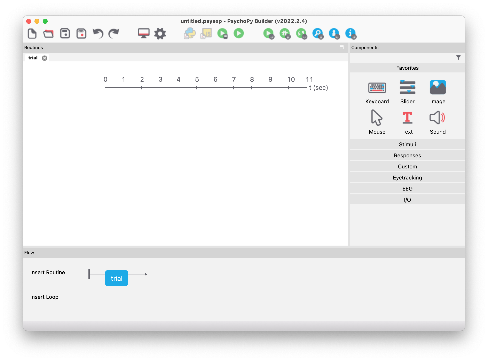

Allgemeines
PsychoPy ist ein in Python geschriebenes Paket zur Erstellung von Experimenten in den Neurowissenschaften oder der experimentellen Psychologie. Es ist frei verfügbar (Open Source) und unterstützt zwei verschiedene Möglichkeiten Experimente zu erstellen:
- Visuelle Erstellung über eine grafische Oberfläche (GUI) namens Builder
- Programmatische Erstellung mit Python-Code (z.B. mit dem mitgelieferten Editor namens Coder)
Ersteres erleichtert den Einstieg, da keinerlei Programmierwissen notwendig ist. Ein mit Builder erstelltes Experiment wird automatisch in Python-Code übersetzt, welcher dann ausgeführt werden kann. Obwohl viele Parameter des Experimentes grafisch angepasst werden können, ist es mit dem Builder mitunter schwierig, komplexere Designs umzusetzen. Dafür ist die zweite Möglichkeit gedacht – man kann die grafische Oberfläche auch komplett ignorieren und das Experiment direkt mit Python-Code erstellen, oder man verfeinert ein mit dem Builder erstelltes Experiment mit angepasstem Python-Code. Dazu sind allerdings sowohl grundlegende Python-Kenntnisse als auch Wissen über die Funktionsweise von PsychoPy notwendig.
In dieser Lehrveranstaltung werden wir beide Möglichkeiten kennenlernen. Zunächst werden wir die grafische Oberfläche Builder verwenden, um einfache Experimente zu erstellen. Im nächsten Kapitel werden wir dann den zugrundeliegenden Python-Code näher betrachten und Experimente direkt mit Python-Code erstellen.
Installation
Da PsychoPy ein Python-Paket ist, kann es prinzipiell mit pip install psychopy installiert werden. Allerdings ist es durch die vielen und teilweise sehr spezifischen Abhängigkeiten von PsychoPy in der Praxis relativ aufwändig, eine funktionsfähige PsychoPy-Umgebung zu erhalten.
Die offizielle Dokumentation beschreibt einige mögliche Installationsvarianten für unterschiedliche Betriebssysteme. In vielen Fällen ist es am einfachsten, die vorgefertigten Standalone-Pakete zu verwenden. Diese Pakete beinhalten eine komplette Python-Umgebung inklusive aller notwendigen Zusatzpakete, welche parallel zu einer eventuell bereits vorhandenen Python-Umgebung installiert werden können. Es gibt diese Standalone-Pakete sowohl für Windows als auch macOS. Für Linux werden keine Installer angeboten, hier muss man PsychoPy manuell installieren (es gibt aber PsychoPy Installation Script for Linux, welches die Installation automatisiert und daher drastisch vereinfacht).
Builder
Nach dem Start von PsychoPy öffnen sich normalerweise drei unabhängige Fenster, nämlich die grafische Oberfläche Builder, der Code-Editor Coder sowie der Runner (welcher zum Starten von Experimenten dient).
Das Builder-Fenster sollte nach dem Starten ungefähr so aussehen:

Flow
Im unteren Bereich (“Flow”) sieht man eine Übersicht über das gesamte Experiment, welches aus Routinen und Schleifen besteht. Momentan gibt es nur eine einzige Routine namens “trial” (als blaues Kästchen dargestellt).
Routinen
Die Routinen sind im Hauptbereich des Programmfensters (“Routines”) mit einer Zeitleiste detailliert dargestellt. Wenn mehrere Routinen im Experiment vorhanden sind, werden diese in separaten Tabs visualisiert. Mit der Zeitleiste kann man nachvollziehen, wann bestimmte Komponenten in einer Routine aktiv sind.
Komponenten
Komponenten kann man einer Routine hinzufügen, indem man diese aus dem Bereich rechts auswählt. Es gibt viele unterschiedliche Komponenten, wie beispielsweise Text-Stimuli, Tastatur-Eingaben, Bild-Stimuli, Sound-Stimuli, usw.
Stroop-Experiment
Wenden wir uns jetzt aber einem praktischen Beispiel zu. Die folgenden Schritte demonstrieren, wie man mit PsychoPy Builder ein Experiment erstellt, welches den Stroop-Effekt misst.
Experiment-Einstellungen
Zunächst sollte man grundlegende Eigenschaften in den “Experiment Settings” festlegen. Durch einen Klick auf das Icon mit dem Zahnrad (siehe Abbildung unten) öffnet sich ein Dialog, in dem man diverse Einstellungen für das Experiment vornehmen kann. Für unser Beispiel ändern wir den Namen auf “stroop” und löschen die zweite Zeile von “Experiment info” durch Klicken auf das Minus-Symbol ganz rechts in dieser Zeile. Dies bewirkt, dass vor dem Starten des Experiments nur der Name der Versuchsperson (“participant”) abgefragt wird.
Das Dialogfenster sollte also wie folgt aussehen und kann durch Klicken auf OK bestätigt werden:
Während man ein Experiment erstellt, sollte man den Vollbildmodus ausschalten (da es sonst teilweise nicht möglich ist, ein laufendes Experiment vorzeitig abzubrechen). Dies kann man in den Experiment Settings im Tab “Screen” tun, indem man die Option “Full-screen window” deaktiviert. Wenn das Experiment dann fertig ist, kann man den Vollbildmodus wieder aktivieren.
Routine “Instructions”
Bevor das eigentliche Experiment beginnt, sollte man eine kurze Erklärung am Bildschirm anzeigen. Dies setzen wir in einer eigenen Routine um – wir können die bereits vorhandene Routine “trial” (die ja noch keine Komponenten enthält) dafür verwenden.
Durch einen Rechtsklick auf das blaue Routinen-Symbol und Auswahl von “rename” können wir einen neuen Namen vergeben – für dieses Beispiel verwenden wir instructions. Danach fügen wir einen Text-Stimulus aus der Komponenten-Ansicht hinzu, mit dem wir einen kurzen Text anzeigen können. Ein Klick auf die Text-Stimulus-Schaltfläche öffnet einen Dialog, in dem wir diverse Eigenschaften ändern können. Wichtige Punkte sind hier
- der Name,
- die Start- und Stopp-Zeit,
- die Textgröße sowie
- der eigentliche Text (die Instruktionen).
Die Instruktionen sollen so lange angezeigt werden, bis die Leertaste gedrückt wird. Deswegen löschen wir die Zahl aus dem Eingabefeld “Stop” – dies bedeutet, dass der Stimulus unendlich lange angezeigt wird. Wir werden aber gleich mit einer weiteren Komponente das Beenden durch einen Tastendruck erzwingen. Die Eigenschaften des Text-Stimulus sollten wie folgt eingegeben werden:

In der Zeitleiste wird, nachdem man OK geklickt hat, der Text-Stimulus grafisch dargestellt. Man erkennt, dass dieser bei Sekunde 0 startet und kein Ende hat. Durch Klicken auf den Stimulus in der Zeitleiste können die Eigenschaften nachträglich verändert bzw. angepasst werden.
Um die Routine per Tastendruck zu beenden und das eigentliche Experiment zu starten, fügen wir eine Keyboard-Komponente hinzu, welche Tastatureingaben aufzeichnen kann. In deren Eigenschaften vergeben wir wieder einen sinnvollen Namen (instructions_resp), lassen das Feld “Stop” leer, lassen das Häkchen bei “Force end of Routine” gesetzt (dies bewirkt, dass die gesamte Routine nach dem Drücken einer Taste beendet wird) und schreiben in die Liste der “Allowed keys” lediglich 'space' (dies bedeutet, dass nur die Leertaste die Routine beendet). Bei “Store” im Tab “Data” kann man “nothing” auswählen, da wir die Information, wann genau die Leertaste gedrückt wurde, nicht benötigen.
Das PsychoPy-Fenster sollte nun wie folgt aussehen:
Ausführen des Experiments
Wir können nun bereits versuchen, das Experiment zu starten. Dazu klickt man auf das grüne “Run experiment” Icon. Nachdem unser Experiment noch nicht gespeichert ist, müssen wir dies nun tun (z.B. unter dem Namen stroop.psyexp). Danach öffnet sich der Runner-Dialog und das Experiment startet.
Unter macOS muss man PsychoPy erlauben, den Computer zu steuern (sonst funktionieren die Experimente nicht). Dies kann man in den Systemeinstellungen im Bereich “Sicherheit & Datenschutz” tun, indem man im Tab “Datenschutz” unter “Bedienungshilfen” auf “PsychoPy” klickt (zuvor muss man auf das Schloss links unten klicken und das Administratorpasswort eingeben).

Wie erwartet erscheint zuerst ein Dialogfenster, in dem wir den Namen (bzw. den Code) der Versuchsperson eingeben müssen. Dieser Name wird in den von PsychoPy erstellten Dateien verwendet, welche alle Informationen über das Experiment automatisch abspeichern (also wann etwas passiert ist) – standardmäßig befinden sich diese Dateien im Unterordner data.
Routine “Task”
Nun soll das eigentliche Stroop-Experiment beginnen. Dazu erstellen wir eine neue Routine durch Klicken auf “Insert Routine” – “(new)”. Für die neue Routine vergeben wir den Namen trial. Danach klicken wir an das rechte Ende der Routine “instructions”, um “trial” direkt danach einzufügen. Durch Klicken auf die soeben erstellte Routine können wir dieser wieder Komponenten hinzufügen.
Spätestens jetzt sollte man sich Gedanken über den exakten Ablauf des Experimentes machen. In unserem einfachen Stroop-Beispiel möchten wir nur die drei Farben rot, grün und blau verwenden. Die Wörter, die am Bildschirm erscheinen, sollen die englischen Begriffe “red”, “green” und “blue” sein. Die Versuchspersonen sollen mit den Tasten “r”, “g” und “b” die Farbe des Wortes angeben (und nicht den Text des Wortes). Wir möchten alle neun möglichen Kombinationen dieser Farben und Begriffe verwenden, also z.B. das rote Wort “red”, das grüne Wort “blue”, usw.
Dazu können wir alle möglichen Bedingungen in einer Excel-Tabelle zusammenfassen. Folgende Tabelle sollte in der Datei conditions.xlsx abgespeichert werden (Textformatierungen wie z.B. fett sollten nicht verwendet werden):
| word | color | correct |
|---|---|---|
| red | red | r |
| red | green | g |
| red | blue | b |
| green | red | r |
| green | green | g |
| green | blue | b |
| blue | red | r |
| blue | green | g |
| blue | blue | b |
Die erste Zeile beinhaltet die Spaltennamen – diese Namen können wir dann in PsychoPy verwenden. Die erste Spalte beinhaltet den Text der am Bildschirm angezeigt werden soll, und die zweite Spalte bestimmt die Farbe des Textes. In der dritten Spalte halten wir den korrekten Tastendruck fest.
Unsere Routine “trial” zeigt genau ein Wort an (mehr dazu gleich) – wir möchten diese Routine aber für jede Zeile in der Excel-Tabelle wiederholen. Dazu benötigen wir eine Schleife, die wir durch Klicken auf “Insert Loop” einfügen können. Als Startpunkt klicken wir auf den Punkt links von “trial”, und als Endpunkt auf den Punkt rechts von “trial”. Danach öffnet sich ein Dialog mit den Eigenschaften der Schleife. Hier können wir z.B. die Anzahl an Wiederholungen einstellen (standardmäßig ist hier 5 gesetzt, diesen Wert können wir beibehalten). Im Eingabefeld “Conditions” können wir nun durch Klicken auf das Ordner-Icon unsere Datei conditions.xlsx auswählen. Die neun Bedingungen und drei Parameter werden erkannt, und diese werden nach Klicken auf OK insgesamt fünf Mal wiederholt (d.h. das Experiment besteht aus insgesamt 45 Trials).
Das PsychoPy-Fenster sollte jetzt in etwa so aussehen:
Nun müssen wir die Routine “trial” mit den benötigten Komponenten befüllen. Wir möchten die Wörter für jeweils eine Sekunde am Bildschirm anzeigen, daher fügen wir einen Text-Stimulus hinzu. Die Eigenschaften sollten wie folgt gesetzt werden:
Der Clou an diesem Stimulus liegt in der Verwendung von Variablennamen, welche wir mit einem Dollar-Zeichen kennzeichnen können. Der darzustellende Text ist also nicht konstant, sondern wird durch den Inhalt der Variablen $word bestimmt. Wichtig ist hier, dass “set every repeat” ausgewählt ist, damit der Inhalt des Textes bei jeder Schleifenwiederholung aktualisiert wird. Wir können alle Spaltennamen aus der Datei conditions.xlsx als Variablen verwenden, $word bezieht sich hier also auf die erste Spalte mit diesem Namen.
Die Textfarbe wird im Tab “Appearance” durch $color bestimmt (“set every repeat” muss auch ausgewählt sein) – color ist ebenso ein Spaltenname in der Datei conditions.xlsx.
Wir möchten außerdem das jeweilige Wort etwas größer am Bildschirm darstellen, deswegen ändern wir im Tab “Formatting” den Eintrag von “Letter height” auf 0.1.
Nun ist ein guter Zeitpunkt, das Experiment wieder auszuführen, um zu prüfen, ob und wie alles funktioniert. Nach den Instruktionen sollten dann \(9 \cdot 5 = 45\) Wörter in verschiedenen Farben für jeweils 1 Sekunde am Bildschirm erscheinen.
Es fehlt noch die Möglichkeit, Tastatureingaben als Antworten geben zu können. Dazu können wir eine Keyboard-Komponente mit folgenden Eigenschaften hinzufügen:
Damit haben die Versuchspersonen 2 Sekunden Zeit, eine der drei Tasten r, g oder b zu drücken. Falls dies nicht geschieht, wird die Routine beendet und der nächste Schleifendurchlauf startet. Außerdem wird gespeichert, ob die Antwort korrekt war oder nicht – dies wird mit Hilfe der Spalte correct (aus des Excel-Datei) erreicht, die ja bereits die erwarteten korrekten Tasteneingaben enthält. Damit kann die erwartete Antwort mit der tatsächlichen Antwort verglichen werden – das Ergebnis dieses Vergleichs wird dann automatisch in die Ergebnisdateien gespeichert. Wir sollten auch den ersten Tastendruck (“first key”) speichern, da dieser für die Antwort relevant ist.
Wir können das Experiment speichern und ausführen – unser einfaches Stroop-Experiment sollte bereits funktionieren. Das Experiment sollte in PsychoPy in etwa so aussehen:
Auswerten der Ergebnisse
Nachdem ein Experiment erfolgreich ausgeführt wurde, befinden sich im Ergebnisordner (standardmäßig ist das der Unterordner data) drei Dateien mit folgendem Inhalt:
- Kompakte Informationen für jedes Trial (.csv-Datei)
- Detailliertere Informationen über den zeitlichen Ablauf des gesamten Experimentes (.log-Datei)
- Für das Debuggen relevante Informationen über das gesamte Experiment (.psydat-Datei)
Die Namen dieser Dateien setzen sich normalerweise aus dem Probandencode, dem Experimentnamen, dem Datum sowie der Uhrzeit zusammen (dies kann aber in den Experiment-Einstellungen angepasst werden, falls man ein anderes Namensschema verwenden möchte).
Angenommen, wir hätten die folgende Aufzeichnung durchgeführt:
- Für den Probandencode wurde im Dialogfenster gleich nach dem Start des Experimentes
s01eingegeben. - Der Name des Experimentes wurde in den Experiment-Einstellungen auf
stroopgesetzt. - Das Experiment wurde am 30. Oktober 2022 um 11:32 gestartet.
Die drei Dateinamen lauten dann s01_stroop_2022-10-30_11h32.51.619 mit den Endungen .csv, .log und .psydat.
Üblicherweise ist es ausreichend, die .csv-Datei zur Auswertung des Experimentes zu verwenden. Man kann diese Datei z.B. in Excel öffnen bzw. importieren. Eine Zeile entspricht einem bestimmten Trial im Experiment, die Spalten enthalten diverse Variablen. Die folgende Tabelle zeigt die für die Auswertung relevanten Spalten (in der Datei sind noch viel mehr zusätzliche Spalten enthalten, die für uns aber nicht von Interesse sind):
| word | color | correct | trial_key.keys | trial_key.corr | trial_key.rt |
|---|---|---|---|---|---|
| red | red | r | r | 1 | 0.9099219 |
| red | blue | b | b | 1 | 1.0798603 |
| green | blue | b | g | 0 | 0.6511786 |
| blue | red | r | r | 1 | 1.377726 |
| blue | blue | b | b | 1 | 1.0776839 |
| red | green | g | r | 0 | 0.7208335 |
| green | red | r | r | 1 | 1.4581527 |
| blue | green | g | b | 0 | 1.0556199 |
| green | green | g | g | 1 | 1.5644918 |
| blue | blue | b | b | 1 | 0.6078371 |
| red | red | r | r | 1 | 0.574091 |
| green | red | r | r | 1 | 1.1114685 |
| red | green | g | b | 0 | 1.2182108 |
| green | green | g | g | 1 | 0.7759897 |
| green | blue | b | b | 1 | 1.0443643 |
| red | blue | b | b | 1 | 0.4471338 |
| blue | green | g | g | 1 | 0.8137774 |
| blue | red | r | r | 1 | 0.50785 |
| blue | red | r | r | 1 | 0.9630382 |
| red | red | r | None | 0 | |
| blue | green | g | None | 0 | |
| green | green | g | None | 0 | |
| green | blue | b | None | 0 | |
| red | blue | b | None | 0 | |
| green | red | r | r | 1 | 0.4799467 |
| red | green | g | g | 1 | 0.5921032 |
| blue | blue | b | b | 1 | 0.5423042 |
| green | red | r | r | 1 | 0.9103351 |
| red | blue | b | b | 1 | 0.9621963 |
| green | blue | b | g | 0 | 0.7260921 |
| red | red | r | r | 1 | 1.0694482 |
| blue | red | r | r | 1 | 0.652598 |
| red | green | g | g | 1 | 1.2136657 |
| blue | blue | b | r | 0 | 0.761413 |
| green | green | g | g | 1 | 1.2664384 |
| blue | green | g | g | 1 | 0.4940767 |
| green | green | g | g | 1 | 0.4782196 |
| red | red | r | r | 1 | 0.4826069 |
| green | blue | b | b | 1 | 0.4881791 |
| green | red | r | r | 1 | 0.6130762 |
| blue | red | r | r | 1 | 0.4593343 |
| red | blue | b | b | 1 | 0.5275998 |
| blue | blue | b | b | 1 | 0.4871046 |
| blue | green | g | g | 1 | 0.6172059 |
| red | green | g | g | 1 | 0.4211524 |
Man könnte nun beispielsweise die mittleren Reaktionszeiten (Spalte trial_key.rt) der kongruenten (Wort und Farbe stimmen überein) und inkongruenten (Wort und Farbei stimmen nicht überein) korrekt gelösten (Spalte trial_key.corr) Trials vergleichen.
Erweitertes Stroop-Experiment
In den folgenden Abschnitten wollen wir versuchen, das Stroop-Experiment um folgende zwei Features zu erweitern:
- Anzeigen eines Textes am Ende des Experimentes (z.B. könnte man sich bei den Versuchspersonen für die Teilnahme bedanken).
- Feedback nach jedem Trial, welches die Versuchspersonen informiert ob die gerade erfolgte Antwort korrekt oder inkorrekt war (oder zu langsam, falls sie nicht innerhalb von zwei Sekunden geantwortet haben).
Verabschiedungstext
Um einen Text am Ende des Experimentes anzuzeigen, können wir ähnlich wie bei den Instruktionen eine Routine mit einem Text-Stimulus erstellen, welcher so lange angezeigt wird, bis die Leertaste gedrückt wird.
Feedback nach jedem Trial
Um nach jedem Trial rückzumelden, ob die Versuchsperson die richtige Taste gedrückt hat, fügen wir direkt nach der Routine “trial” eine neue Routine namens “feedback” hinzu. Es ist wichtig, dass sich diese noch innerhalb der Schleife befindet, da wir das Feedback nach jedem Trial geben möchten. Da wir dazu einen Text anzeigen möchten, fügen wir einen Text-Stimulus names “feedback_text” hinzu. Weil wir keinen fixen Text anzeigen können, geben wir die Namen $msg bei Text bzw. $msg_color (im Tab “Appearance”) bei der Textfarbe an (bei beiden Feldern muss “set every repeat” gesetzt werden). Diese beiden Python-Objekte sollen den Text (“Correct!”, “Wrong!” oder “Too slow!”) sowie die zugehörigen Farben (grün, rot oder weiß) beinhalten – dies werden wir im nächsten Schritt implementieren.
Wir können Python-Objekte in einer Code-Komponente erstellen – dazu klickt man auf das entsprechende Icon in der Gruppe “Custom”. Im Dialogfeld kann man nun Python-Code einfügen.
In PsychoPy muss man alle Python-Objekte zu Beginn des Experimentes erstellen und z.B. auf Standardwerte setzen. Dazu fügt man im Abschnitt “Begin Experiment” folgenden Code ein:
msg = ""
msg_color = "white"Den Wert von “Code Type” können wir auf “Py” setzen, da wir unser Experiment nur mit Python erstellen wollen. PsychoPy unterstützt zusätzlich noch Javascript, was eine Ausführung des Experiments im Browser ermöglicht. Wir benötigen diese Funktionalität aber nicht.
Im Abschnitt “Begin Routine” befindet sich der Code, der immer am Beginn der Routine ausgeführt wird:
if trial_key.keys:
if trial_key.corr:
msg = "Correct!"
msg_color = "green"
else:
msg = "Wrong!"
msg_color = "red"
else:
msg = "Too slow!"
msg_color = "white"Sehen wir uns an, wie dieser Code funktioniert. Wir verwenden hier die Keyboard-Komponente trial_key, welche wie jede Keyboard-Komponente zwei wichtige Eigenschaften (als Attribute) enthält:
trial_key.keysist eine Liste, welche die im aktuellen Trial gedrückte Taste(n) enthält. Wurde noch keine Taste gedrückt, ist diese Liste leer.trial_key.corrist einbool-Wert (alsoTrueoderFalse), welcher angibt, ob die gedrückte Taste richtig oder falsch ist.
Die Bedingung if trial_key.keys überprüft, ob die Liste Elemente enthält oder leer ist. Dies ist eine abgekürzte und empfohlene Schreibweise, denn eine nicht-leere Liste entspricht dem bool-Wert True, und eine leere Liste entspricht dem bool-Wert False.
Angenommen, wir hätten x = True, dann wäre die Bedingung if x: äquivalent zu if x == True:. Ebenso wäre if not x: äquivalent zu if x == False:. In Python ist es üblich, Bedingungen so kompakt wie möglich zu formulieren, daher werden diese abgekürzten Schreibweisen empfohlen.
Wenn die Liste trial_key.keys also nicht leer ist, wurde eine Taste gedrückt, und der entsprechende Codezweig wird ausgeführt. Dieser besteht aus einer weiteren Bedingung, nämlich if trial_key.corr (auch das ist eine abgekürzte Schreibweise für if trial_key.corr == True). Dies bedeutet also, wenn die gedrückte Taste der korrekten Antwort entspricht, wird msg auf "Correct!" und msg_color auf "green" gesetzt. Falls die Taste nicht korrekt war, wird der else-Zweig ausgeführt (msg = "Wrong!" und msg_color = "red").
Der abschließende else-Zweig wird nur ausgeführt, wenn keine Taste gedrückt wurde (also trial_key.keys leer ist). Dann werden msg und msg_color entsprechend gesetzt.
Es ist wichtig, dass die Code-Komponente ganz am Beginn der Routine ausgeführt wird, d.h. sie muss sich auch ganz oben in der Zeitübersicht (über dem Text-Stimulus) befinden. Die Position in der Liste der Komponenten kann man verändern, wenn man auf eine Komponente rechtsklickt und z.B. “move to top” auswählt.
Die fertige Feedback-Routine sollte dann so aussehen:
Unser erweitertes Stroop-Experiment ist nun fertig und kann ausgeführt werden. Als Übung könnten Sie versuchen, zu Beginn jedes Trials einen kurzen Ton abzuspielen.
Übungen
Übung 1
Erstellen Sie das in den Unterlagen beschriebene Stroop-Experiment mit Feedback und führen Sie als Versuchsperson das Experiment durch. Berechnen Sie dann aus den Ergebnisdaten die mittleren Reaktionszeiten für korrekte kongruente und inkongruente Stimuli!
Übung 2
Erstellen Sie mit PsychoPy Builder ein Experiment namens number_comparison, in dem die Versuchsperson zwei am Bildschirm erscheinende Zahlen vergleichen soll. Sie soll angeben, ob die rechte oder linke Zahl die (numerisch) größere der beiden Zahlen ist.
Verwenden Sie als Stimuli alle 20 Kombinationen der Zahlen von 1 bis 5, also z.B. 1–2, 1–3, 1–4, 1–5, 2–1, 2–3, usw. (die Excel-Datei soll also inklusive Kopfzeile 21 Zeilen beinhalten; gleiche Zahlen sollen nicht miteinander verglichen werden).
Für die Antworten sollen entweder die Pfeil-nach-links-Taste oder die Pfeil-nach-rechts-Taste gedrückt werden können. Die Pfeil-nach-links-Taste heißt in PsychoPy "left" und bedeutet in diesem Experiment, dass die linke Zahl größer als die rechte ist. Die Pfeil-nach-rechts-Taste heißt "right" und bedeutet, dass die rechte Zahl größer ist.
Ein Trial (also ein Zahlenpaar) soll maximal 2 Sekunden am Bildschirm sichtbar sein – falls bis dahin keine Antwort gegeben wurde, soll das nächste Trial starten. Nach einer gegebenen Antwort bzw. nach dem Timeout von 2 Sekunden soll ein kurzes Feedback gegeben werden, ob die Antwort richtig oder falsch war (Dauer 1 Sekunde). Wenn keine Antwort gegeben wurde, soll kein Text (also ein leerer String) angezeigt werden.
Die 20 Bedingungen sollen alle in zufälliger Reihenfolge angezeigt werden und drei mal wiederholt werden, d.h. insgesamt soll das Experiment aus 60 Trials bestehen.
Das Experiment soll außerdem einen Instruktionstext sowie einen Verabschiedungstext beinhalten, welche nur durch Drücken der Leertaste beendet werden können.